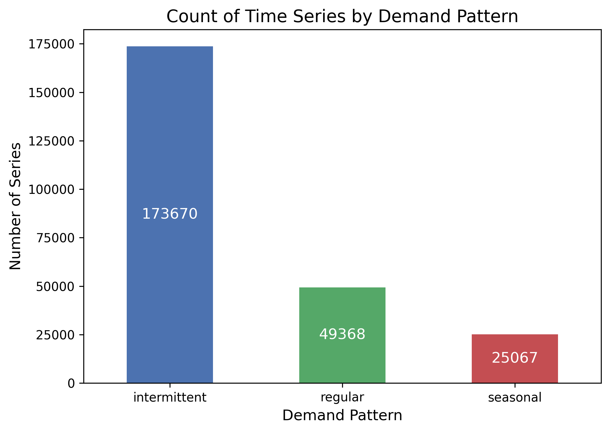
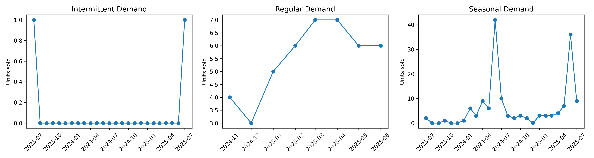
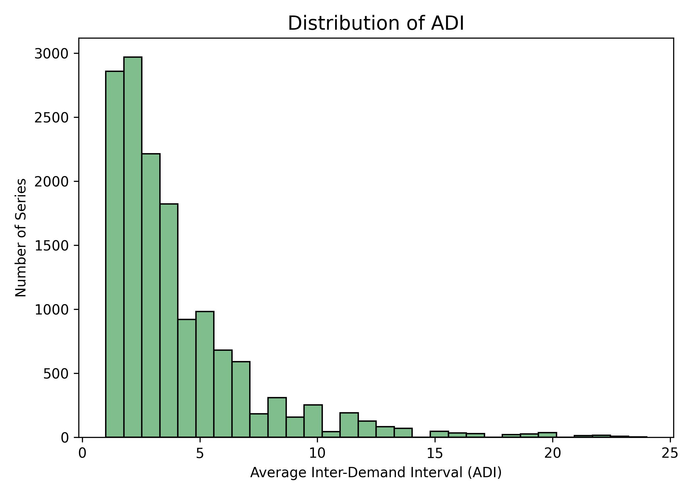
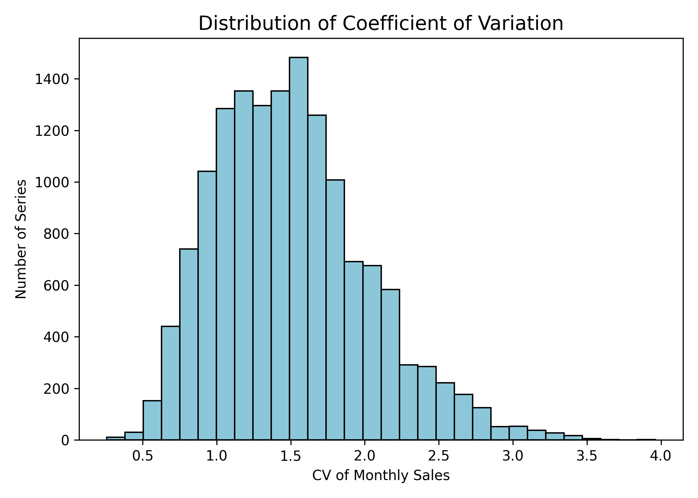
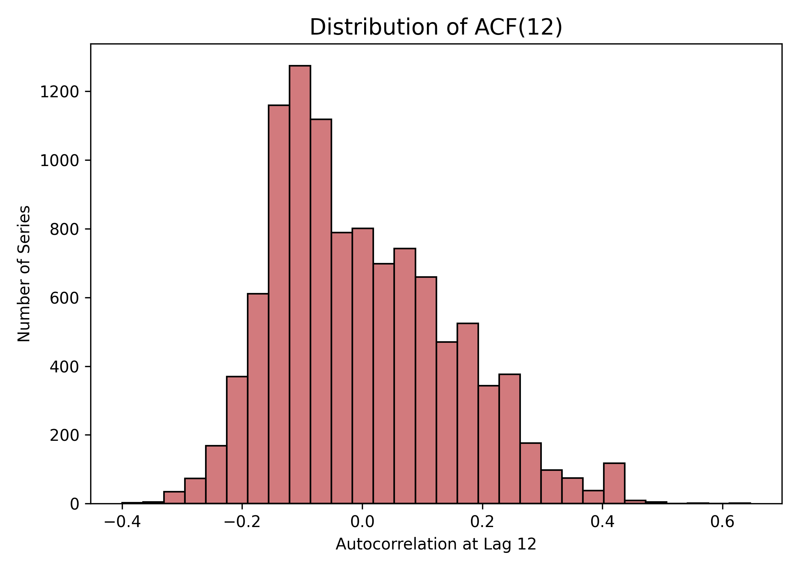
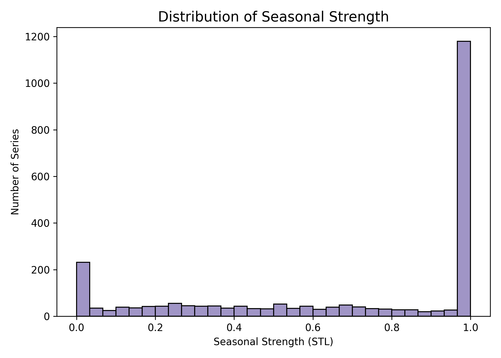
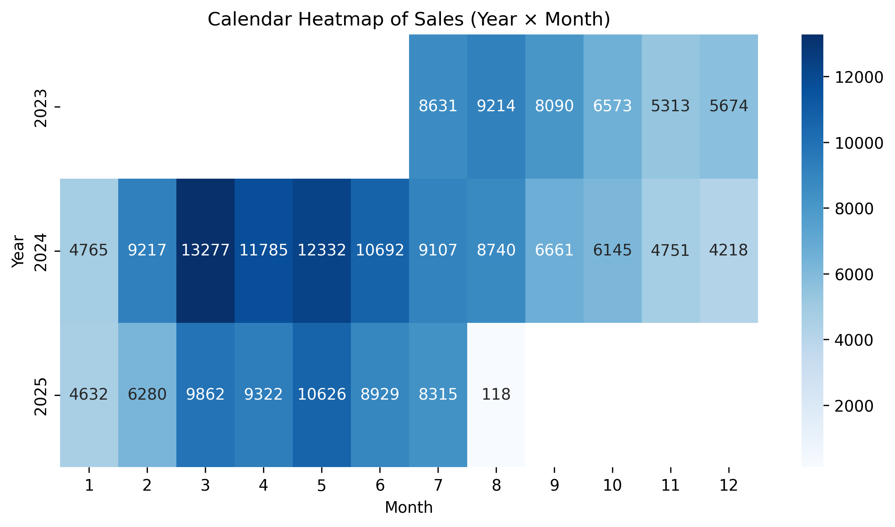
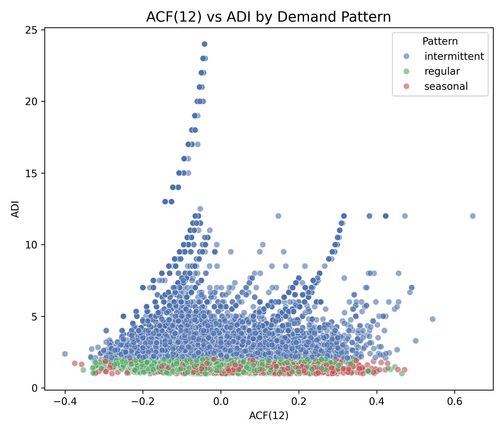
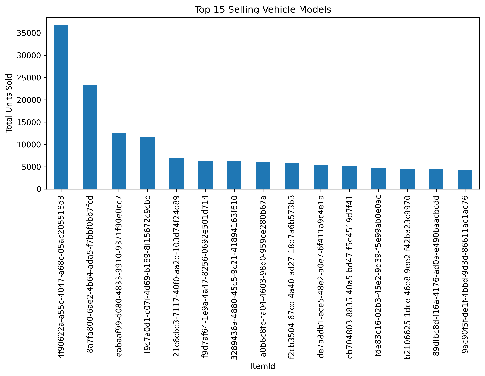

Exploratory Data Analysis
1. Overview
This Exploratory Data Analysis (EDA) examines structural characteristics of the monthly store–item sales series. The purpose is to understand sparsity, volatility, seasonality, and time-series length, factors that critically shape the forecasting problem. These diagnostics motivate the classification of each series into intermittent, regular, or seasonal demand patterns and guide our choice of forecasting models.
All figures in this section are pre-generated and saved in docs/p1/.
2. Demand Pattern Composition
2.1 Distribution of Demand Patterns
The following figure summarizes the distribution of time series across three demand patterns. Intermittent demand overwhelmingly dominates the dataset, reflecting long stretches of zero sales in most store-item combinations.

2.2 Representative Time Series
To illustrate the behavioral differences across demand patterns, the figure presents one representative store–item time series from each class: intermittent, regular, and seasonal. These examples were selected using diagnostic criteria rather than simply choosing the first occurrence in the dataset. Specifically, the intermittent example corresponds to a series with high zero-share and a moderate ADI value; the regular example was selected as the series with the lowest coefficient of variation among low–zero-share series; and the seasonal example is the series with the highest combined seasonal strength and 12-month autocorrelation.
The three examples highlight the substantial heterogeneity present in dealer-level automotive sales:
- Intermittent demand is characterized by long runs of zero sales punctuated by isolated, unpredictable non-zero months. This pattern reflects the fact that many store–model combinations sell extremely infrequently, often only a few units per year.
- Regular demand displays relatively stable month-to-month sales volumes without long zero periods or strong cyclic behavior. Although the absolute sales level remains low, these series exhibit consistent temporal structure that is well suited to autoregressive models such as SARIMA.
- Seasonal demand exhibits recurring bursts of high-volume months interspersed with lower activity, producing a weak but discernible annual pattern. These dynamics arise in models with promotional cycles, inventory timing, or seasonal consumer interest.
Together, these examples visually confirm the need for a pattern-specific forecasting approach, as the underlying time-series behaviors differ substantially across demand types.

3. Diagnostics of Sparsity and Irregularity
3.2 ADI (Average Inter-Demand Interval)
ADI quantifies how frequently non-zero demand occurs. Higher values correspond to longer periods between sales events, characteristic of intermittent demand.

3.3 Coefficient of Variation (CV)
CV captures relative variability and highlights the high volatility of low-volume store-item series.

4. Diagnostics of Seasonal Behavior
4.1 Autocorrelation at Lag 12 (ACF12)
Most series exhibit weak or near-zero 12-month autocorrelation. This indicates limited or unstable seasonality across the dataset.

4.2 STL Seasonal Strength
Seasonal strength values extracted via STL decomposition also suggest that strong seasonality is rare, as many series contain fewer than two full annual cycles.

4.3 Seasonal Heatmap
This calendar heatmap visualizes monthly sales intensity across the full dataset. It is optional for the paper but visually useful on a website.

5. Pattern Classification Diagnostics
5.1 Zero-Share vs ADI
Plotting zero-share against ADI reveals natural clustering that separates intermittent from regular and seasonal patterns. Intermittent series occupy the high zero-share, high ADI region.

5.2 ACF12 vs ADI
Seasonal series (where present) cluster at higher ACF(12) values. Regular and intermittent series occupy lower-correlation regions.

6. Additional Exploratory Figures
6.1 12-Month Seasonality Plot
This plot examines year-over-year seasonal patterns at the aggregate level.

6.2 Top Items by Sales Frequency (Optional)
This figure highlights concentration of demand across items.

7. Summary
The EDA reveals a dataset dominated by sparse and irregular store–item sales series, with limited seasonal structure and high volatility. These characteristics justify the need for a pattern-aware modeling strategy: Croston for highly intermittent series, SARIMA for regular demand, and selective use of seasonal models such as SARIMA or Prophet where seasonal signals are sufficiently strong.